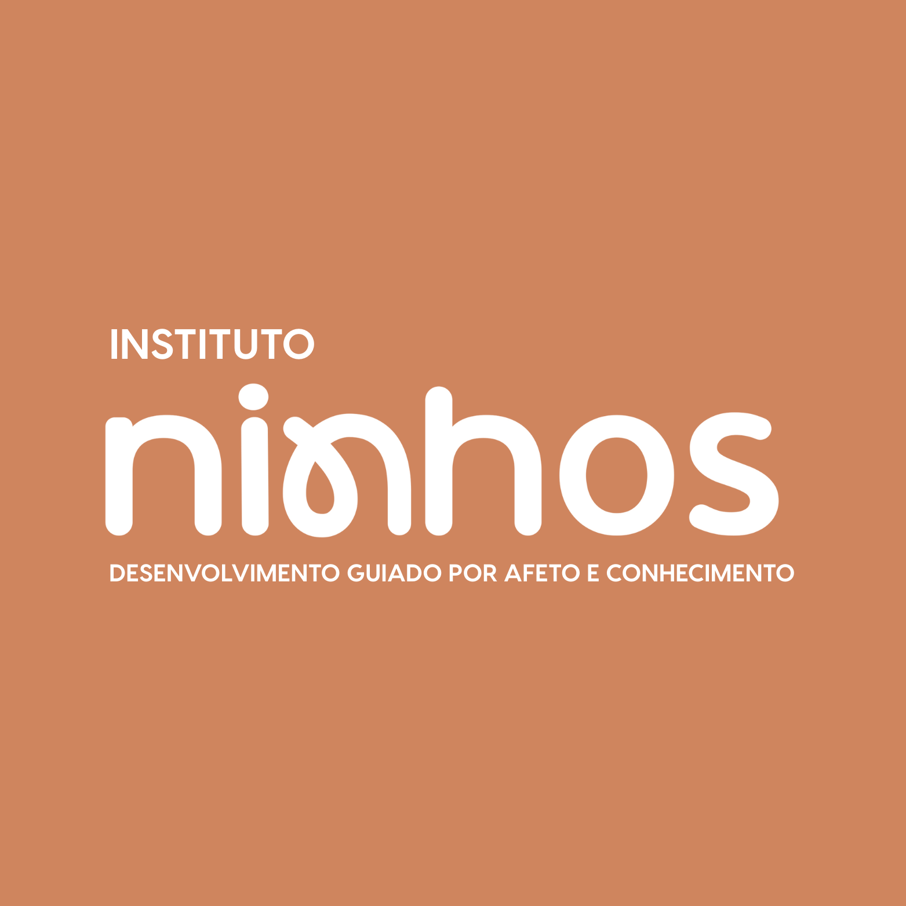
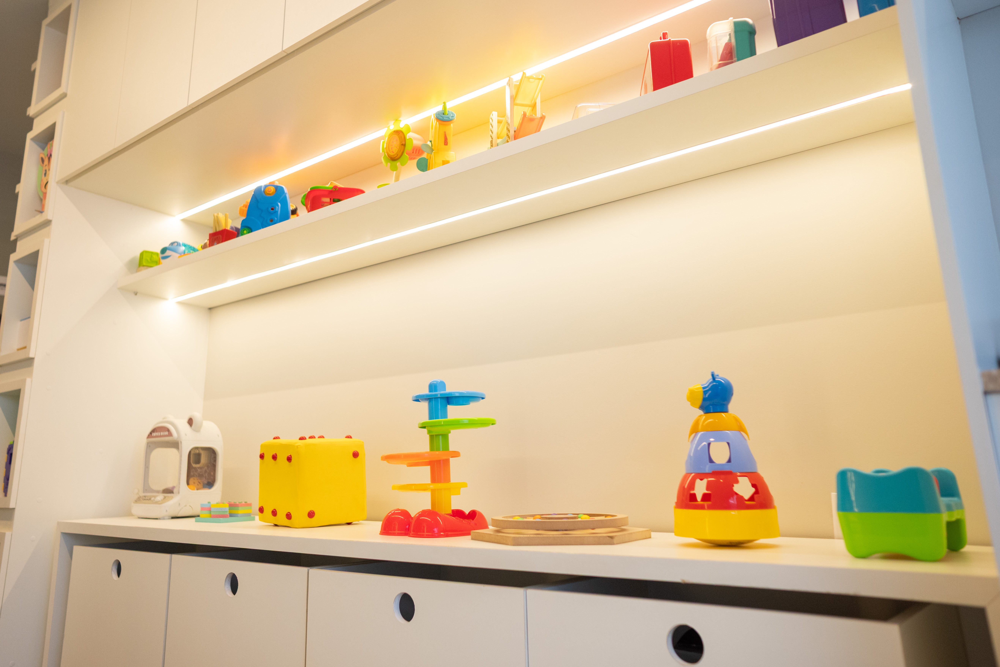
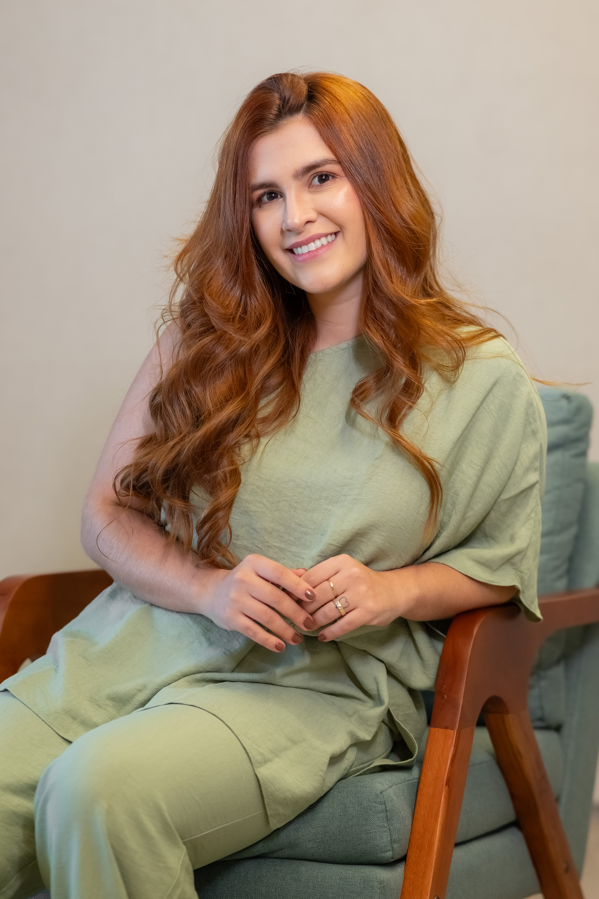
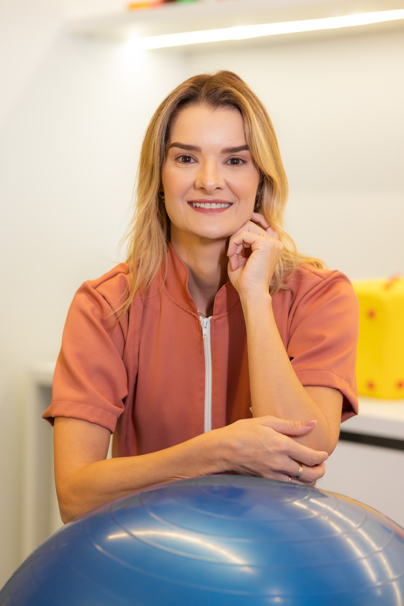
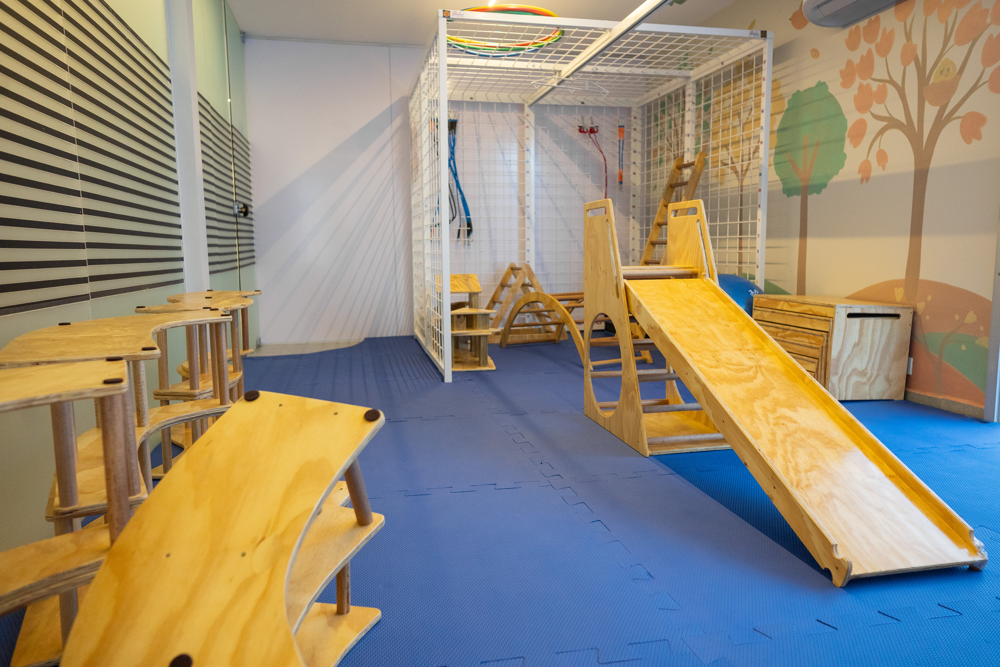
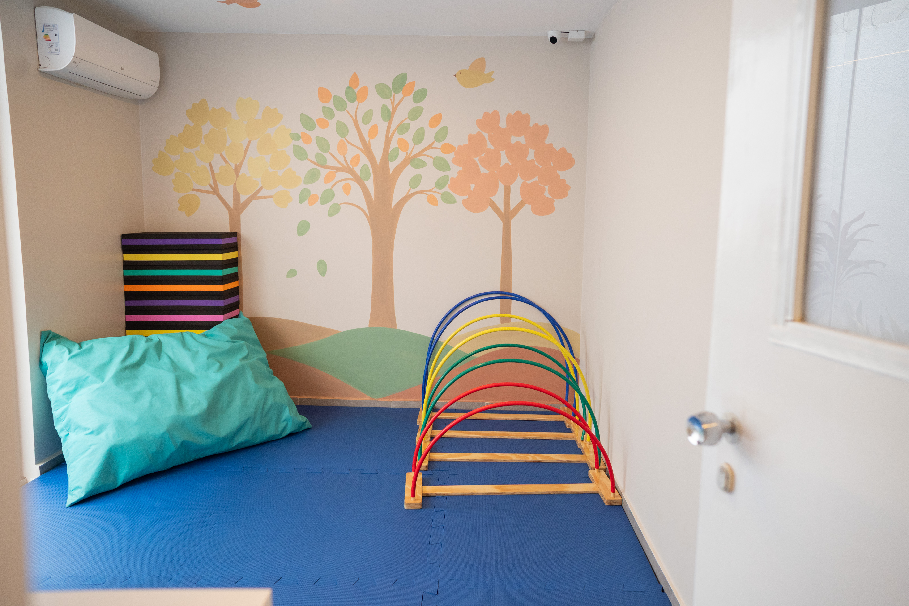
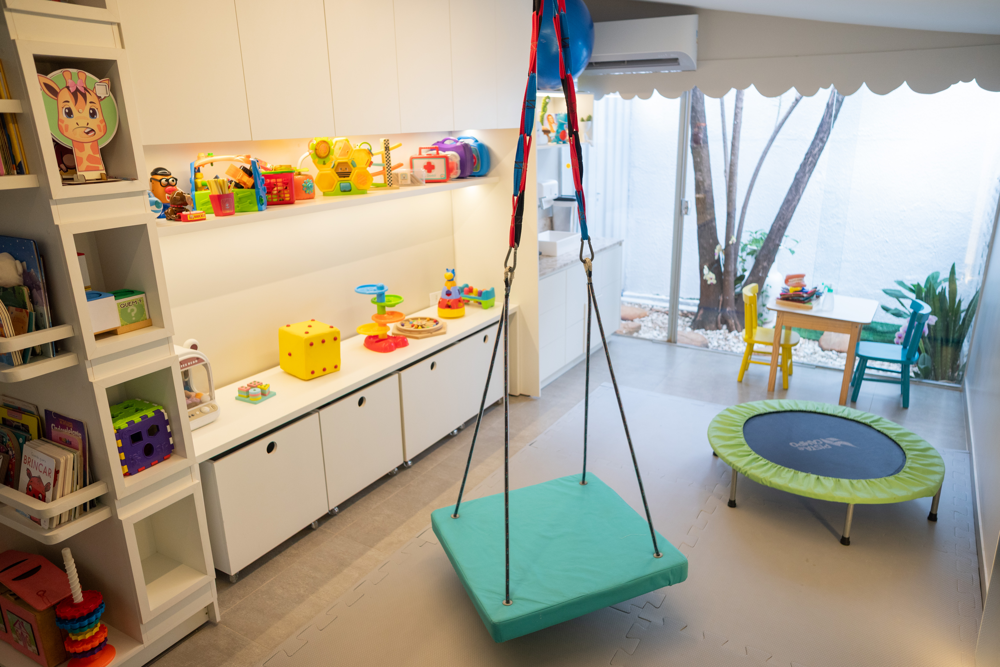
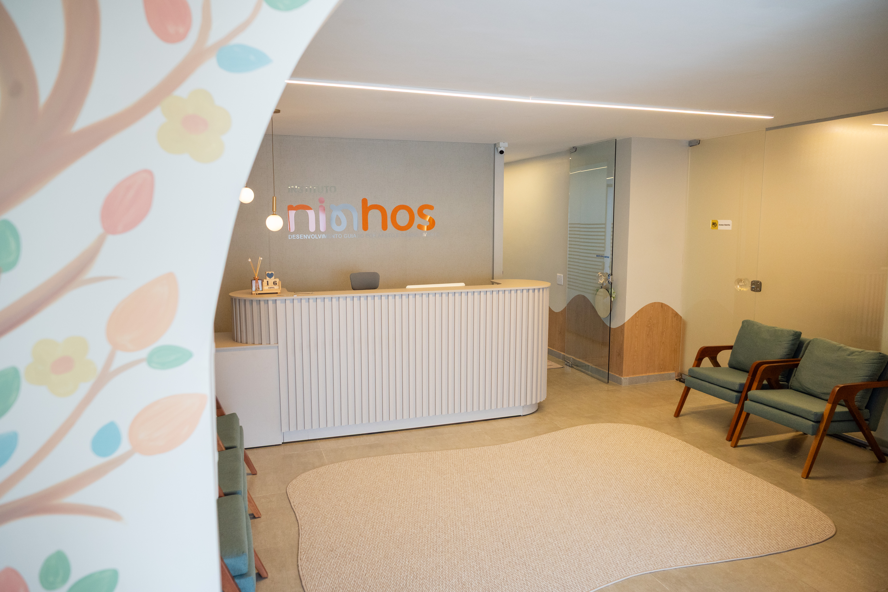
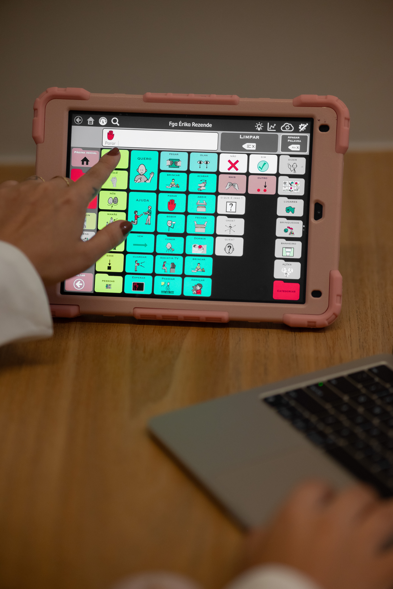

Onde estamos
Fácil de chegar, no Setor Sul

EndereçoRua 88, nº 547, Setor Sul
Goiânia/GO · CEP 74085-010
ContatoConversar pelo WhatsApp
Instagram@institutoninhos

Agendar avaliaçãoFonoaudiologia, fisioterapia, estimulação precoce, autismo (TEA) e intensivo motor. Avaliação individualizada de 50 minutos em um espaço projetado para crianças.
Agendar avaliação pelo WhatsApp Resposta rápida · Setor Sul, Goiânia
Quanto mais cedo a intervenção, maiores os ganhos no desenvolvimento. Se você se identificar com algum destes pontos, vale agendar uma avaliação.
Atraso para sustentar a cabeça, rolar, sentar, engatinhar ou andar
Diagnóstico ou suspeita de autismo (TEA) ou outro transtorno do neurodesenvolvimento
Atraso na fala ou na comunicação, com poucas palavras para a idade ou dificuldade de interação
Bebê prematuro ou com indicação médica de estimulação precoce
Condições neurológicas como paralisia cerebral ou síndromes genéticas
Dificuldades de equilíbrio, coordenação ou tônus muscular, ou orientação do pediatra para acompanhamento
Intervenção nos primeiros anos de vida, a janela mais importante do desenvolvimento, para bebês prematuros ou com atrasos.
Acompanhamento especializado para crianças autistas, com plano terapêutico individualizado e parceria com a família.
Autonomia comunicativa na infância: desenvolvimento da fala, linguagem e interação, com base em evidências.
Para atrasos motores e condições neurológicas, com metas funcionais claras e acompanhamento próximo da evolução.
Protocolos intensivos para acelerar ganhos motores em casos neurológicos, com blocos concentrados de atendimento.
Terapia no ambiente natural da criança e acompanhamento à distância para famílias fora de Goiânia.
Sabemos que esse momento gera dúvidas e ansiedade. Por isso, o caminho é simples e transparente.
Conta um pouco sobre seu filho e tira suas dúvidas. Nossa equipe orienta o melhor caminho e agenda a avaliação.
A criança é avaliada de forma lúdica e acolhedora. Você participa, observa e entende cada etapa.
Você sai sabendo exatamente o que seu filho precisa: objetivos, frequência e como a família participa.


Salas amplas com equipamentos terapêuticos, ambiente sensorial e estrutura completa, tudo pensado para que a criança evolua brincando.





Atendemos desde bebês recém-nascidos (estimulação precoce e prematuridade) até crianças maiores. Quanto mais cedo a intervenção, melhores os resultados.
Não é obrigatório. Se você percebeu sinais de atraso ou tem alguma preocupação, pode agendar a avaliação diretamente. Trabalhamos em parceria com pediatras e neuropediatras.
Entre em contato pelo WhatsApp para verificar as condições de atendimento e possibilidade de reembolso pelo seu plano de saúde. Fornecemos toda a documentação necessária para solicitar reembolso.
É uma sessão de 50 minutos, lúdica e acolhedora, em que avaliamos o desenvolvimento da criança e conversamos com a família. Ao final, você recebe um plano terapêutico individualizado com objetivos claros.
Sim. Oferecemos atendimento domiciliar para famílias que precisam ou preferem a terapia no ambiente da criança, além de acompanhamento online para quem está fora de Goiânia.
É um protocolo com sessões concentradas em um período curto, indicado para acelerar ganhos motores em casos neurológicos. Na avaliação, verificamos se é indicado para o seu filho.
EndereçoRua 88, nº 547, Setor Sul
Goiânia/GO · CEP 74085-010
ContatoConversar pelo WhatsApp
Instagram@institutoninhos
Cada mês conta no desenvolvimento infantil. Agende a avaliação do seu filho e saia com um plano claro do que fazer.
Agendar pelo WhatsApp